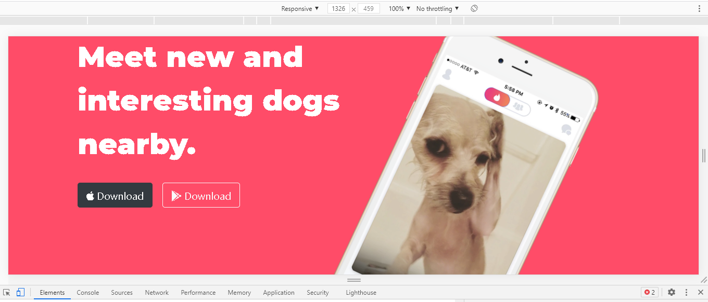

If we access the developer tools on Chrome browser. There is a style tab
under the element panel. This tool is helpful to perform temporary
in the styling of the web page.
Changes :-

Explanation :- I changed the background color of the google image to
#00587a using background-color property in style tab.
Code :-

This functionality is available under the developer tools of chrome
browser. This helps in designing responsive websites. By help of this we
can see how our website will appear on different viewports like laptop,
tablets or mobiles.
Example:-
I am showing how my website tindog looks on a laptop and on a mobile
screen using this functionality.
|
Laptop Version
|
Mobile Version
|
|

|

|
Under the element panel in developer tools DOM tree is present where the
HTML and over basic code of your website is written. You can make
temporary changes in your code from here.
Changes :-
Explanation :- The Search buttons text is changed.
Code :-